Inashiki, Ibaraki: things to do, food and stays
Inashiki · Ibaraki
Inashiki
Highlighted on the Ibaraki map.
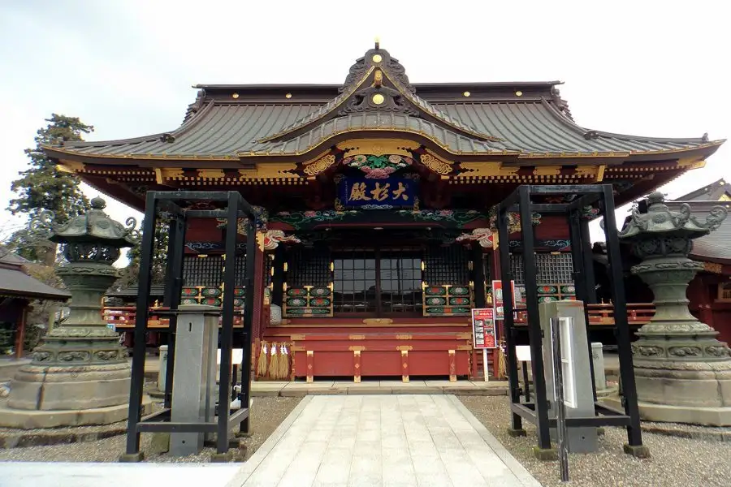
Stay
稲敷の家
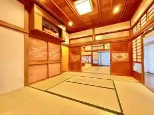
Inashiki No Ie
タイムリゾート隠れ屋
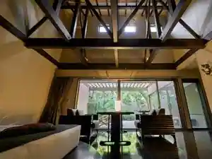
Taimu Resort Kakure Ya
Resort hotel in Nakayama, Inashiki with open-air baths.
Dining
鮨 小野
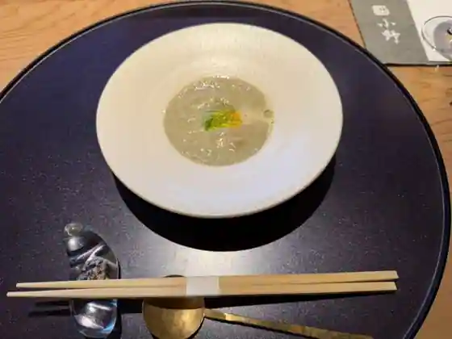
Sushi Ono
あらいやオートコーナー
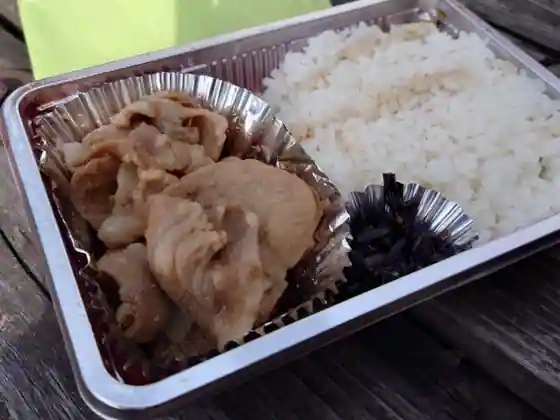
Araiya Otokona
さいらい亭 稲敷店
Sairai Tei Inashiki
お食事 ほづみ
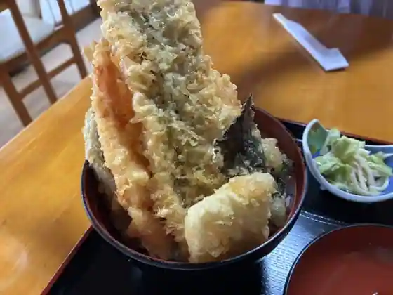
O Shokuji Hozumi
味の天龍
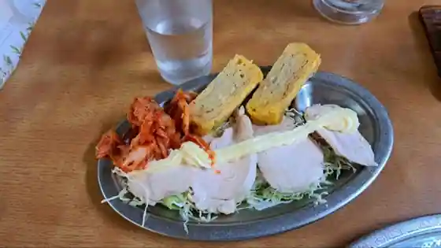
Aji No Tenryu
ラーメン 一遊
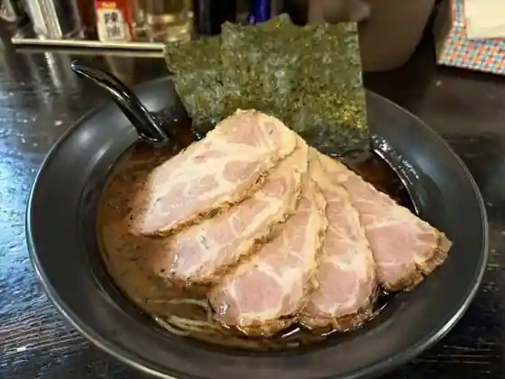
Ramen Ichiyu
海鮮和食 仲々 稲敷店
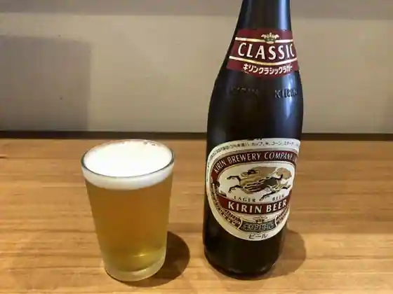
Kaisen Washoku Nakanaka Inashiki
JGM霞丘ゴルフクラブ レストラン
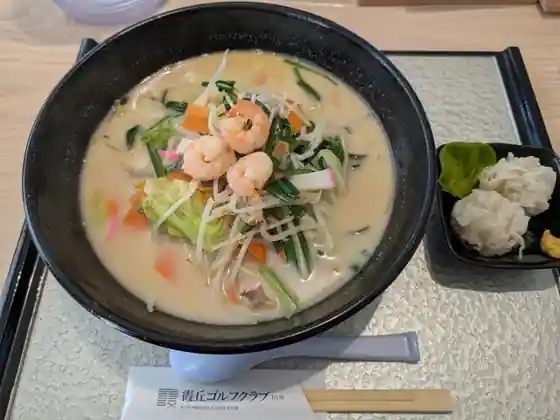
JGM Kasumi Oka Gorufukurabu Restaurant
レストラン吉野
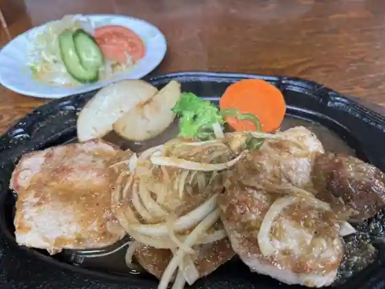
Restaurant Yoshino
麺屋小鉄 稲敷店
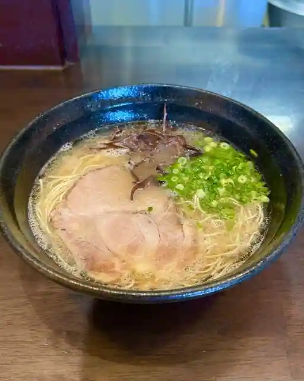
Men Ya Kotetsu Inashiki
結夢庵
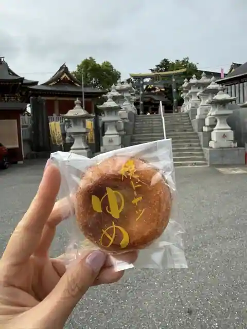
Ketsu Yume Iori
江戸崎カントリー倶楽部
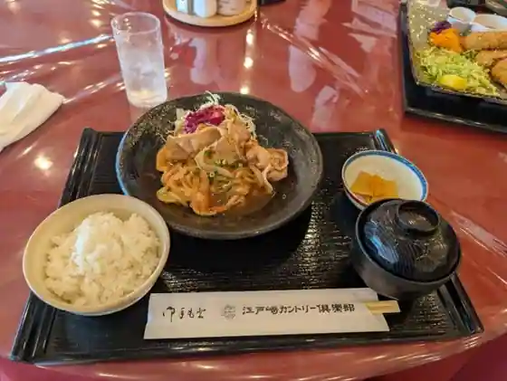
Edosaki Kantori Kurabu
ステーキハウスTEXAS
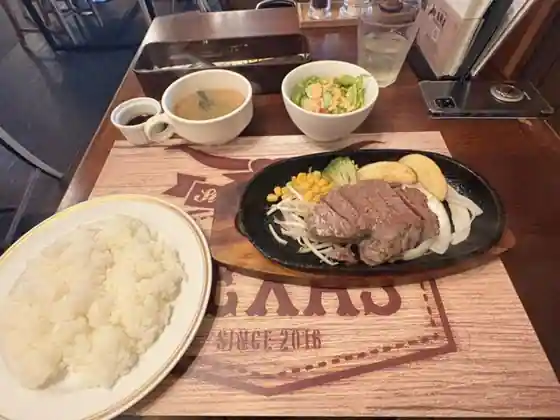
Steak House TEXAS
桜ゴルフ倶楽部
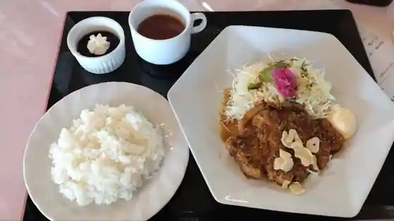
Sakura Gorufu Kurabu
美よし
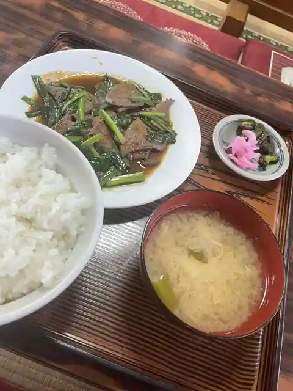
Bi Yoshi
大名本陣
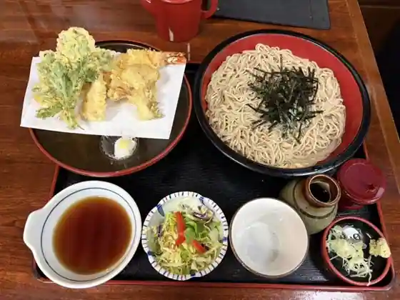
Daimyo Honjin
青木菓子店
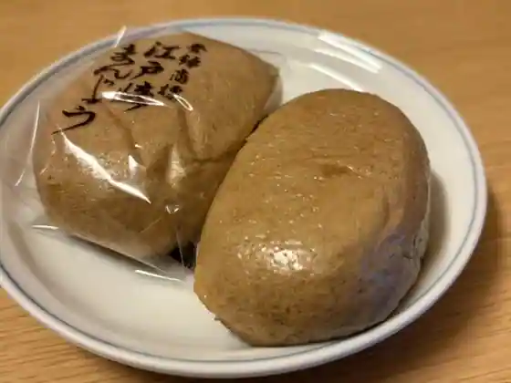
Aoki Kashi
平家
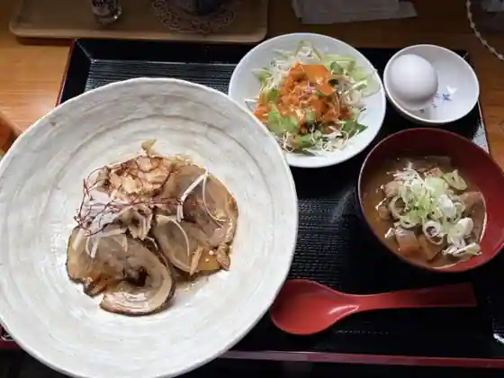
Heike
栄寿司
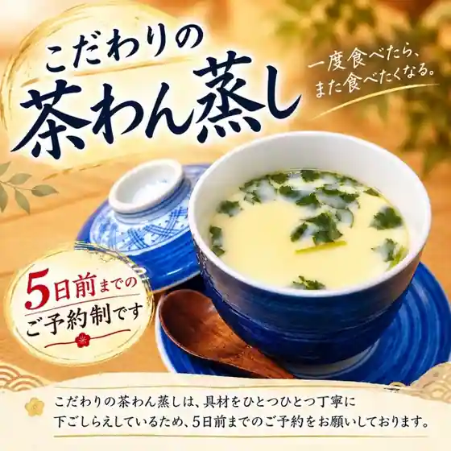
Eiju Tsukasa
寿司 海鮮旨いもん屋 まいど
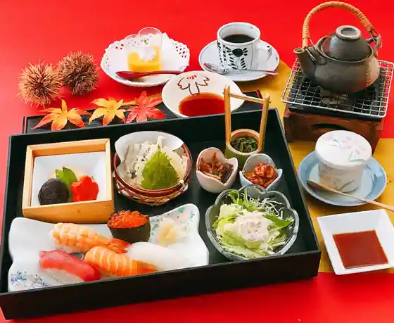
Sushi Kaisen Umai Mon Ya Maido
土浦カントリー倶楽部 レストラン
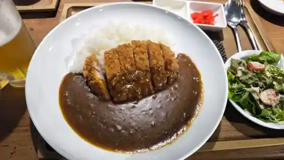
Tsuchiura Kantori Kurabu Restaurant
味咲屋
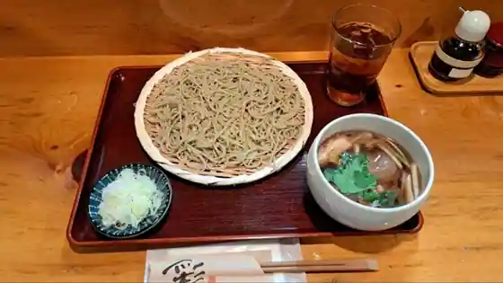
Aji Saki Ya
東郷菓子舗
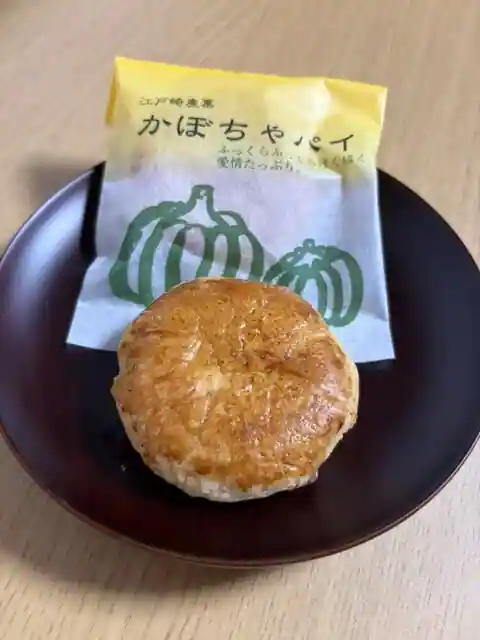
Togo Kashi Ho
大包
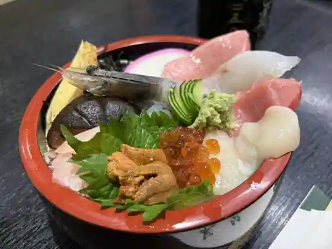
Dai Tsutsumi
Sights
Osugi Shrine
SHOEI HELMET PARK
Komorebi Mori no Ibaraido
Yoko Tone Komon
Wada Park
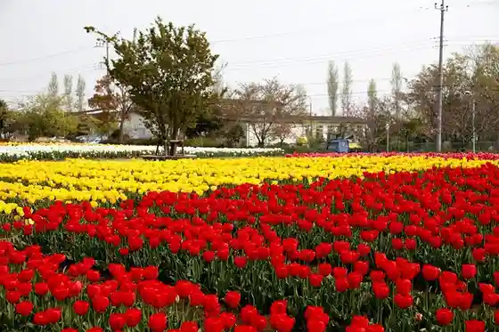
Edosaki Warai Yu Kan
Inashiki Ritsu Folk History Museum
JA Inashiki Shintone Chokubai Tokoro
O Shokuji Tokoro Asahi Ya